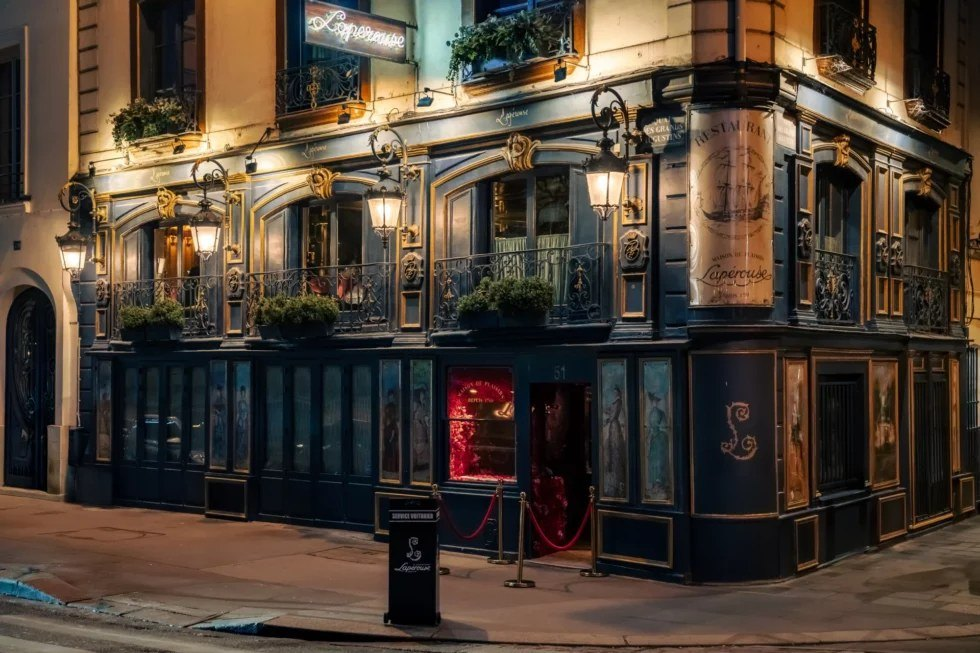
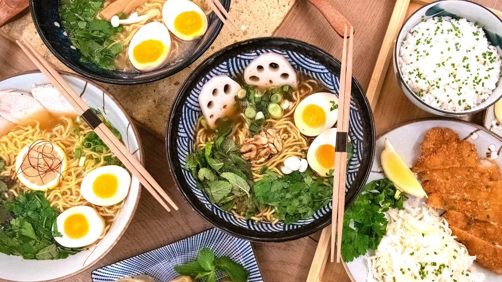
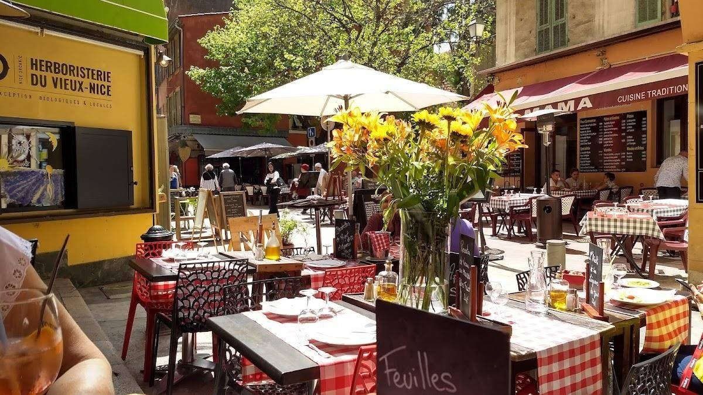
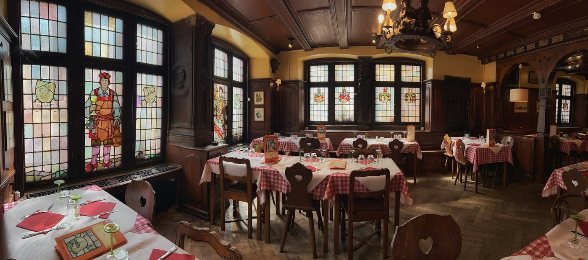
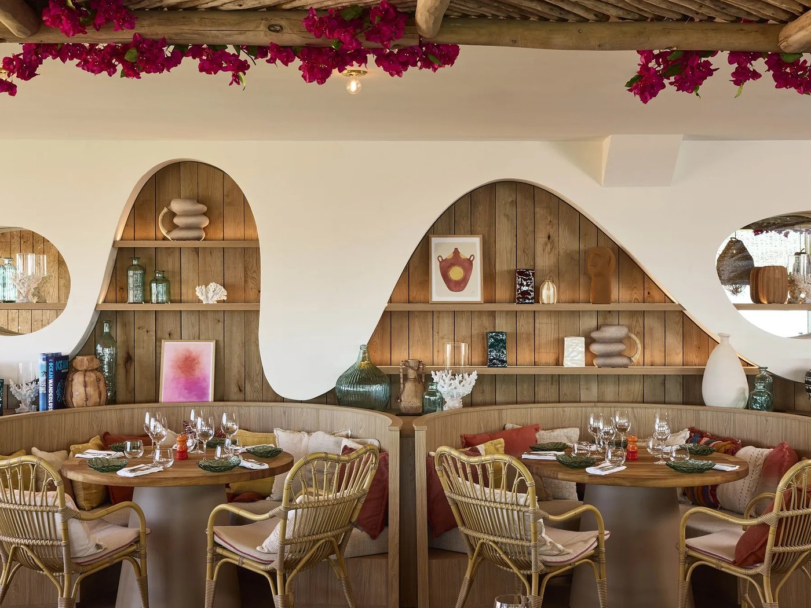

Fraîchement publié
Le fil
Unes et dépêches

Dîner romantique à Paris : 10 tables en 2026
Paris · 15 min de lecture

Meilleur ramen à Paris : 8 adresses en 2026
Paris · 13 min de lecture

Les 8 meilleurs restaurants de Nice en 2026
Nice · 14 min de lecture

Winstub à Strasbourg : 7 adresses authentiques
Strasbourg · 13 min de lecture

Les 8 meilleures tables de Strasbourg en 2026
Strasbourg · 11 min de lecture

Les 6 meilleures tables de Biarritz en 2026
Biarritz · 9 min de lecture

Les 8 meilleurs restaurants de Bordeaux en 2026
Bordeaux · 11 min de lecture

Les 8 meilleurs restaurants de Marseille en 2026
Marseille · 11 min de lecture
Le fil ouvre au premier service.
Rien ne paraît ici tant que la rédaction n'a pas fait son travail : choisir une table, s'y attabler, comparer. La grille de notation, elle, est déjà écrite.
En direct
Le fil de la journée, heure par heure
VillesOù manger à Lyon : 15 tables en 2026→GuideLes 10 meilleurs bouchons lyonnais en 2026→GuideMeilleur brunch à Paris : 12 adresses en 2026→VillesLes 25 meilleurs restaurants de Paris en 2026→PalmarèsLes 15 meilleurs restaurants de France en 2026→
Chaque parution paraîtra ici, et au sommaire.
Tous les articles →